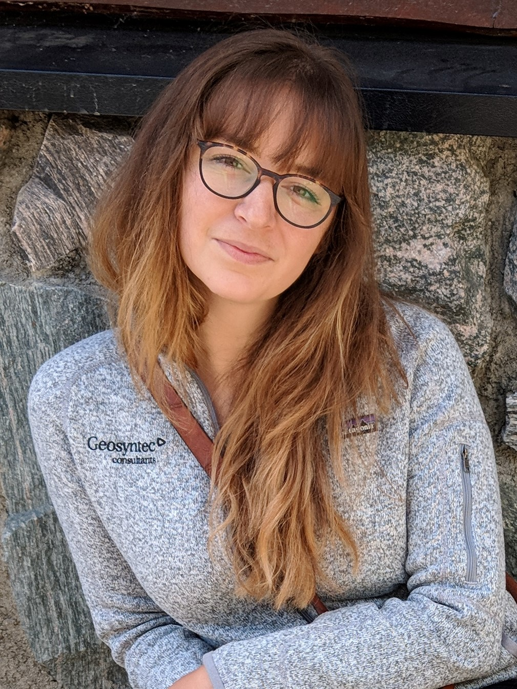

Ellen K Buelow
Geologist/Web developer/Multilingual

I recently complete the University of Minnesota Web Development Boot Camp. My background is in Geology (I LOVE ROCKS!!!). I studied sedimentology and Andean tectonics at San Diego State University after which I worked in environmental consulting in Upstate New York. I decided to enroll in this class because I wanted to learn to code to either pair with my geology background or use to start a new career.
Hobbies of mine include biking, backpacking, camping, and traveling. I have moved around a lot and my hobbies have adapted with me. Minnesota has awesome biking, cross country skiing, and canoeing! I hope this summer to backpack part of the Superior Hiking Trail! I love to talk travel, so if you ever have recommendations or question let me know! I recently went to Norway for three weeks and have hopes to go to Portugal, Chile, and India!